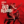

 Wolfenstein: The Old Blood
Details
 |
|
| Playtime | Not Played |
| Last Activity | Never |
| Added | 10/29/2021 1:32:37 |
| Modified | Never |
| Completion Status | Not Played |
| Library | Xbox |
| Source | Xbox Game Pass |
| Platform | PC (Windows) |
| Release Date | 3/12/2021 |
| Community Score | |
| Critic Score | |
| User Score | |
| Genre | |
| Developer | MachineGames |
| Publisher | Bethesda Softworks |
| Feature | |
| Links | |
| Tag | Game Pass |
Description
The year is 1946 and the Regime is on the brink of winning World War II. In an effort to turn the tide in the allies’ favor, B.J. Blazkowicz must embark on an epic, two-part mission deep within Bavaria….
Part one of Wolfenstein: The Old Blood - Rudi Jäger and the Den of Wolves - pits BJ Blazkowicz against a maniacal prison warden as he breaks into Castle Wolfenstein in an attempt to steal the coordinates to General Deathshead’s compound. In part two – The Dark Secrets of Helga Von Schabbs – our hero's search for the coordinates leads him to the city of Wulfburg where an obsessed Regime archaeologist is exhuming mysterious artifacts that threaten to unleash a dark and ancient power.
The Action!
Experience MachineGames’ intense first-person combat as you brandish all-new weapons such as the bolt-action rifle, 1946 shotgun, and the grenade-launching Kampfpistole. Unlock your potential with a new set of perks for hi-octane action and vicious stealth take-downs.
The Adventure!
Explore breath-taking set pieces featuring rural Germanic towns, sprawling valleys tangled with cable cars and bridges, ghostly catacombs, as well as a return to the iconic Castle Wolfenstein. Use dual-wielding metal pipes to navigate the world with brand new wall-climbing abilities.
The Terror!
Go up against a new cast of vicious villains and enemies, including legions of hulking new Super Soldiers, elite shock troops, drones and the Regime’s darkest and most terrifying creations yet.